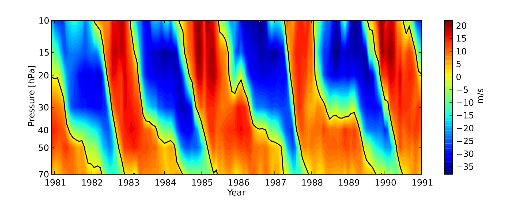
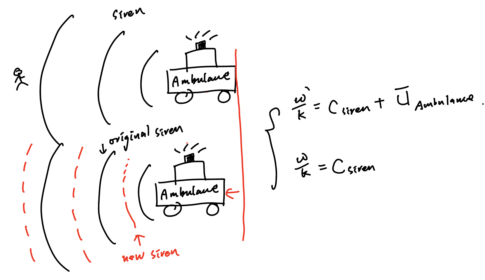
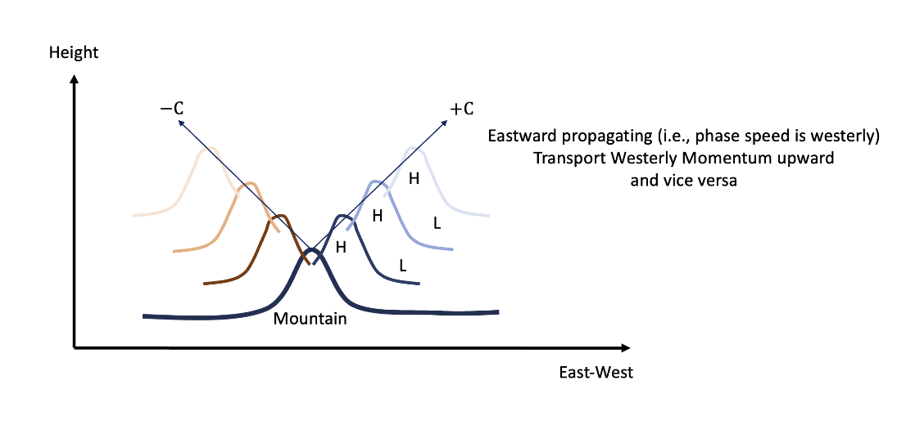
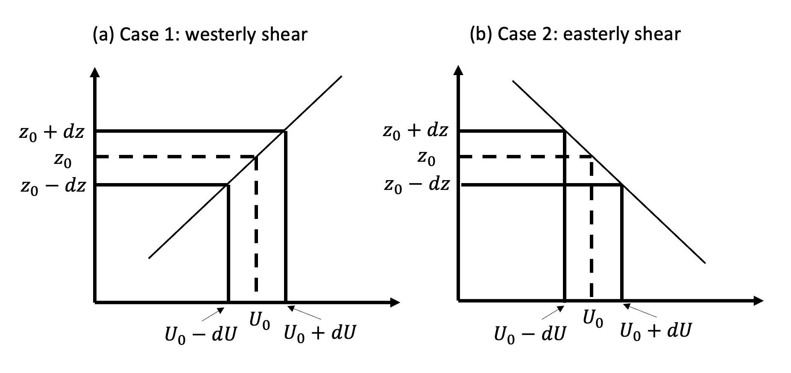
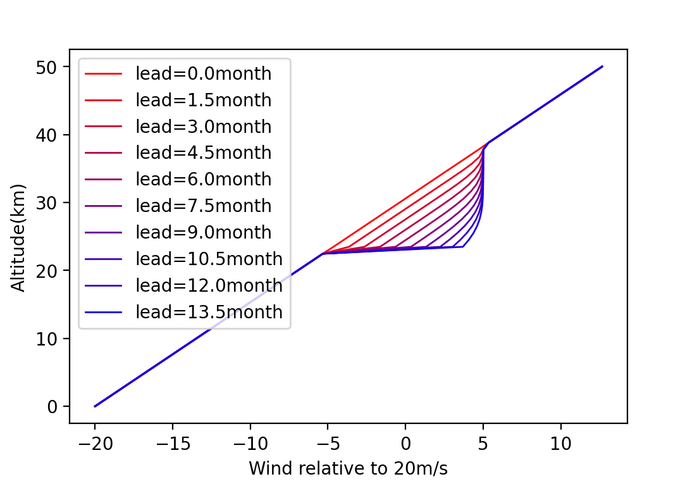

Week 9: Quasi-biennial Oscillation#
Quasi-biennial Oscillation (QBO) is a quasi-periodic oscillation in the stratospheric, zonal-mean zonal wind, characterized by a period of around 28 months. It was first discovered by Richard and Reed in 1960. The signal is so regular that one can observe it without implementing any filtering (see figure below)
{kind=link}

Fig. 24 The zonal mean zonal wind in the stratospheric tropics.#
The QBO can efficiently change the static stability around the tropopause, which has strong modulation on the convective activity. For example, during the easterly phase of QBO, the convection of MJO is much stronger than the westerly phase of QBO. Along with the MJO global impacts, one can expect that the fingerprint of QBO can be observed in most places around the globe.
Given the QBO is high up in the stratosphere, the corresponding dynamics is relatively simple. A theory of QBO was first proposed by Charney and Drazin (1968), [LH68] and [HL72], which incorporates the well-known wave-mean flow interaction dynamics. According to their theory, the oscillation is due to the interaction of upward-propagating Kelvin and Yanai waves with the mean flow. More recently, it has been proposed that eastward and westward-propagating gravity waves play an important role and the low-frequency waves were de-emphasized.
The various equatorially trapped waves discovered by [Mat66] (discussed Week 6 and 7: Tropical Wave Theory) are observed to produce wave energy which further propagates upward and downward. It is believed that the energy source comes from diabatic processes such as convection (Nitta 1972). While in Week 6 and 7: Tropical Wave Theory, a resting basic state is considered, it is very important to consider mean flow due to the Doppler Shift.
Doppler-Shift of wave and the deposition of wave energy#
Like other waves, the atmospheric waves also experience Doppler Shift as long as the relative motion happens between the observer and the source of waves. For example, the westward propagating wave looks more stationary when riding on a westerly mean flow (i.e., frequency \(\sim \infty\)) and the eastward propagating wave looks more transient in the same mean flow (i.e., complete multiple oscillations in a short period). The figure below demonstrates how Doppler Shift changes the frequency of a wave. The siren frequency from an ambulance sounds higher when the ambulance approaches the person listening to the sound and vice versa. In such cases, the observed wave number (or frequency) may exceed the critical value where the mean flow can sustain the corresponding wave propagation (i.e., you can still tell it’s a wave!). At the end, the wave breaks and deposits momentum. We will walk through more details in the later of this week.
{kind=link}

Fig. 25 An example of the Doppler Shift in a moving object.#
To understand how these waves influence the phase transition of QBO (zonal mean flow), we gonna start with something classic, the Ellassen Palm theory for mountain wave (one should notice that the upward motion from the boundary is similar to inhomogeneous topography at the lower boundary.) There are two important ingredients in this theory (1) the direction of momentum transport and (2) when the wave momentum is deposited.
{kind=link}

Fig. 26 An example of how the mountain wave propagates Eastward(\(+C\))/Westward(\(-C\)) and upward at the same time.#
The direction of momentum transport#
In the panel of Fig. 26, we can find that when the inhomogeneity of the lower boundary exists (such as mountain/mass flux from the lower boundary), it will trigger gravity propagating eastward and westward. The eastward propagating waves (westerly to the mean state) generally transport westerly momentum upward due to their zonal height tilting (tilting eastward with height) and the same concept can be applied to the westward propagating waves.
However, when the mean westerly exists, the zonal height tilting due to the westward propagating wave vanishes, which is not the case for the eastward propagating wave. Therefore, not only do the types of gravity waves matter but whether they are filtered by mean flow also matters.
When momentum is deposited#
One should notice that the presence of vertical momentum transport does not necessarily indicate the change in mean flow. Because when the input and output have an equivalent amount, then there is no acceleration/deceleration of mean flow. The necessary condition of the presence of vertical momentum flux convergence can be derived through the angular momentum and eddy kinematic energy equations.
To have both equations, we will begin with the zonal momentum equation,
Assume a wave solution of
(where \(\frac{1}{\rho_0}p_0(z)+g=0\))
substitute into (80)
Multiply each equation in (82) by (1) \(u\) (2) \(w\) and (3) \(p\) respectively. We have…
The above formula is similar to the turbulence kinetic energy used in boundary layer dynamics. Integrate the last equation over zonal direction, we have the zonal mean mechanical energy
We can also link the above equation to the angular momentum equation. To achieve this, we multiply the first equation of (82) by \(\rho_0\) (U-c) u + p and integrate it over zonal direction (which eliminates the terms associated with zonal gradient, i.e., “\(ik\)” terms ) We have
(84) and (85) suggests that \(\rho_0 \int_0^{2\pi} uw dx =\text{const}\) when \(U-c\neq 0\). i.e., no momentum will be deposited until the wave reaches the critical level (the level where \(U=c\)). At a critical level, we can find some analogs in our ambulance example. It corresponds to where ambulance and sound travel with the same speed and direction. Therefore, in a limited traveling length of the wave, we can observe a nearly infinite number of waves making the finite assumption of wave dynamics no longer hold and momentum is deposited.
In addition, when \(\int_0^{2\pi} uw\) is positive through a critical level (i.e., keeps transporting mechanical energy upward), it implies that \(uw\) term must change signs above and below the critical level, which breaks the assumption of \(\rho_0 \int_0^{2\pi} uw dx =\text{const}\).
To solve the problem, all of the momentum must be absorbed at the critical level. Booker and Bretherton (1967) provide a useful formula…
(86) suggests that \(\rho_0 \int_0^{2\pi} uw dx\) is constant below critical level. Right above the critical level, it needs to taper toward 0 in a short range of traveling distance. Given the Richardson number is always greater than 1, the second equation of (86) indeed satisfies the condition we need. (86) also suggests the momentum absorbed at the critical level is \(A[1+e^{-2\pi\sqrt{\mathbf{Ri}-\frac{1}{4}}}]\).
However, the absorption of momentum at a single level will lead to a shock-like signal and modeling difficulty. Also, we need to determine the sign of A to make all necessary conditions consistent.
A spectral solution of momentum deposition#
To circumvent the problem in the previous section, we can approach it with a spectral perspective of wave propagation.
It is assumed that the disturbance that transports momentum consists of a spectrum of waves with a continuous distribution of phase speed. For a limited range of phase speed \(c\pm dc\), we can find a limited range of critical level (\(U\pm dU\)) which absorbs the momentum. Such momentum absorption only applies to a finite range of wave and keep the rest unaffected by the mean flow. (i.e., the second equation of (87)). The second equation of (87) comes from the fact that \(f(U) |dU|\) has a unit of momentum change per unit time. Thus, the eddy momentum flux convergence (i.e., the rate change of mean flow due to eddy can be written as)
where \(\Delta t=|\frac{dU}{dz}|\). \(F_{WM}\) is the eddy momentum flux (i.e., the amount of absorbed momentum) by wave with \(U_0=c\) and \(-\frac{d F_{WM}}{dz}\) is the corresponding momentum flux convergence at the critical level.
Here, we will use two cases to analyze the sign of \(f(U_0)\). The first case represents the westerly shear (westerly increases with height) and the second case represents the easterly shear.
{kind=link}

Fig. 27 Momentum fluxes in (a) westerly shear and (b) easterly shear#
In the westerly shear, if \(\int_0^{2\pi} pw dx\) remains positive, for the regions below the critical level (where \(c>U\)), \(\int_0^{2\pi} uw dx \) must be positive and so does \(f(U)^{z-}\) according to (87) and (85). For the regions above where (where \(U>c\)), \(\int_0^{2\pi} uw dx \) must be negative. This also makes \((f(U)^{z+}-f(U)^{z-})/dz = f(U_0) [1+e^{-2\pi\sqrt{\mathbf{Ri}-\frac{1}{4}}}] |\frac{dU}{dz}|\) negative according to (87). Since \(|\frac{dU}{dz}|\) is positive definite, \(f(U)=f(U_0) [1+e^{-2\pi\sqrt{\mathbf{Ri}-\frac{1}{4}}}]\) will be negative definite. (notice that Lidzen and Holton state this term is positive definite, which is different the analysis here).
Readers will also find \(- f(U_0) [1+e^{-2\pi\sqrt{\mathbf{Ri}-\frac{1}{4}}}] |\frac{dU}{dz}|\) is equivalent to \(- |f(U_0)| [1+e^{-2\pi\sqrt{\mathbf{Ri}-\frac{1}{4}}}] \frac{dU}{dz}\) by examining both westerly and easterly shear case. (HW)
Lidzen and Holton Model#
Substitute the above conclusion back into zonal momentum equation, the yielded (89) looks identical to a simple advection model, where the downward propagation of zonal wind is influenced by the flux convergence of eddy momentum. The downward propagation speed is determined by the intensity of momentum flux convergence.
In this model, some simple setup is given. First, we assume there is no mean vertical motion \(\overline{w}\). Second, the downward motion due to the momentum flux convergence only happens over a limited range of wind speed. i.e.,
Using the example below, at the initial time, only regions between 37.5 and 22.5 km can experience westerly acceleration while other regions are left out. Therefore, for wind speed fall within this ranges will keep accelerating until it hit the upper bound of westerly. The same idea can be applied to mean easterly.
At the end, one can observe the downward propagation of zonal wind anomaly. Currently, the scientific community doesn’t have a good parameterization of bulk eddy. (given the challenges of higher-order closure problem) Therefore, the downward propagation is determined through the observation.
{kind=link}

Fig. 28 The simulated QBO evolution in the westerly shear using (89)#
The study of QBO also shows the importance of properly parameterized gravity wave drag given its global scale of change in zonal wind. In earlier years, most GCM experienced severe cold bias over the polar regions and stratosphere. One reason is that most gravity waves don’t deposit enough momentum to change the mean flow.
Á F Adames and D Kim. The MJO as a dispersive, convectively coupled moisture wave: theory and observations. J. Atmos. Sci., 2016.
Ángel F Adames and John M Wallace. Three-dimensional structure and evolution of the moisture field in the MJO. J. Atmos. Sci., 72(10):3733–3754, October 2015.
David S Battisti and Anthony C Hirst. Interannual variability in a tropical atmosphere–ocean model: influence of the basic state, ocean geometry and nonlinearity. J. Atmos. Sci., 46(12):1687–1712, June 1989.
J Bjerknes. Atmospheric teleconnections from the equatorial pacific1. Mon. Weather Rev., 97(3):163–172, March 1969.
James R Holton and Richard S Lindzen. An updated theory for the quasi-biennial cycle of the tropical stratosphere. J. Atmos. Sci., 29(6):1076–1080, September 1972.
Fei-Fei Jin. An equatorial ocean recharge paradigm for ENSO. part I: conceptual model. J. Atmos. Sci., 54(7):811–829, April 1997.
Yi-Xian Li, J David Neelin, Yi-Hung Kuo, Huang-Hsiung Hsu, and Jia-Yuh Yu. How close are leading tropical tropospheric temperature perturbations to those under convective quasi equilibrium? J. Atmos. Sci., 79(9):2307–2321, September 2022.
Richard S Lindzen and James R Holton. A theory of the quasi-biennial oscillation. J. Atmos. Sci., 25(6):1095–1107, November 1968.
Roland A Madden and Paul R Julian. Detection of a 40-50 day oscillation in the zonal wind in the tropical pacific. Journal of Atmospheric Sciences, 28:702–708, July 1971.
Taroh Matsuno. Quasi-geostrophic motions in the equatorial area. J. Meteorol. Soc. Japan, 44(1):25–43, 1966.
Julian P McCreary, Jr. A model of tropical ocean-atmosphere interaction. Mon. Weather Rev., 111(2):370–387, February 1983.
Mark J Rodwell and Brian J Hoskins. Monsoons and the dynamics of deserts. Quart. J. Roy. Meteor. Soc., 122(534):1385–1404, July 1996.
Stephen E Zebiak and Mark A Cane. A model el niñ–southern oscillation. Mon. Weather Rev., 115(10):2262–2278, October 1987.